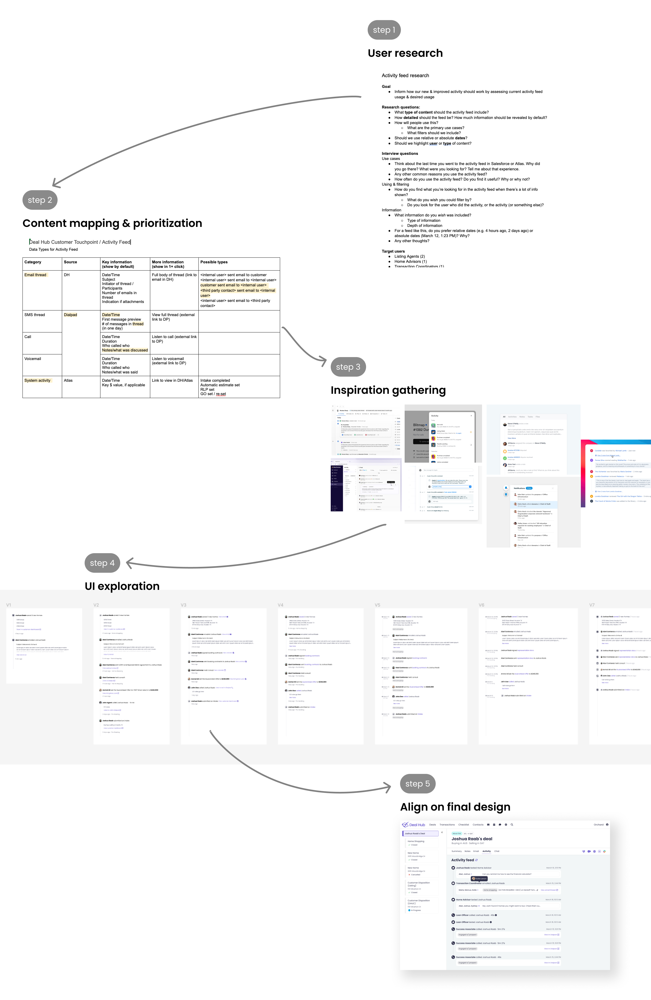

<!DOCTYPE html>
<html lang="en">

<head>
	<title>Emily Porat | Home Shopping</title>
	<link rel="stylesheet" type="text/css" href="styles/global.css">
	<link rel="stylesheet" type="text/css" href="styles/global-mobile.css">
	<link rel="stylesheet" type="text/css" href="styles/nav.css">
	<link rel="stylesheet" type="text/css" href="styles/projects.css">
	<script src="https://ajax.googleapis.com/ajax/libs/jquery/1.9.1/jquery.min.js"></script>
	<link rel="icon" type="image/x-icon" href="pics/favicon.svg"/>
	<!-- Icons -->
	<script defer src="https://use.fontawesome.com/releases/v5.13.0/js/all.js"></script>
	<script defer src="https://use.fontawesome.com/releases/v5.13.0/js/v4-shims.js"></script>
	<!-- Global site tag (gtag.js) - Google Analytics -->
	<script async src="https://www.googletagmanager.com/gtag/js?id=UA-119412150-1"></script>
	<script>
		window.dataLayer = window.dataLayer || [];
		function gtag(){dataLayer.push(arguments);}
		gtag('js', new Date());

		gtag('config', 'UA-119412150-1');

      // load other reused files
      $(function() {
      	$('#nav').load('https://emilyporat.com/nav.html');
      	$('#footer').load('https://emilyporat.com/footer.html');
      });
  </script>
</head>

</html>
<body class="preload">
	<meta name="viewport" content="width=device-width">
	<div id="nav"></div>
	<div id="arrow-up" onclick="slideUp()"><i class="fa fa-angle-up"></i></div>

	<div class="full-width" style="background-color: #DDD9F7">
		<div class="title-wrapper animate-reveal animate-first">
			<div class="title">
				<div>
					<h4>Orchard • 2023</h4>
					<h1>Home shopping</h1>
					<h3>Helped real estate agents gain better insight into customer behavior & motivations.</h3>
				</div>
			</div>
		</div> 

		
	</div>


	<div class="panel">
		<div class="body right">
			<div class="context-summary">

				<h2>Overview</h2>

				<p class="p-XL">
					I led research & design for a new home shopping dashboard & related tools that improved insight into customer behavior, increasing user satisfaction 26% and saving $1000s in Salesforce licensing costs.
				</p>
				<p><a href="#final-design">Jump to final designs →</a></p>

				<div class="space"></div>

				<div class="context-specifics">
					<div class="context-description">
						<h4>Role</h4>
						<p>Design Lead</p>
					</div>

					<div class="context-description">
						<h4>Duration</h4>
						<p>6 months</p>
					</div>

					<div class="context-description">
						<h4>Released</h4>
						<p>July '23</p>
					</div>
					
					<div class="context-description">
						<h4>Team</h4>
						<p>Me, PM, 4 engineers</p>
					</div> 
				</div>

				
				<div class="space"></div>

				<h3>Background</h3>
				<p> Orchard is a real estate startup that offers streamlined services and tooling for consumers looking to buy and/or sell their home. Orchard employs its own real estate agents, internally called “Home Advisors,” who support customers throughout their home shopping & buying experience.
				</p>

				<div class="space"></div>


				<h3>Problem</h3>
				<p>The current tooling (Salesforce) was not serving our agents well — they were lacking insight into key info about their customer’s engagement, activity, and intent.
				</p>

				<div class="space"></div>

				<h3>Solution</h3>
				<p>Move agents into Deal Hub, Orchard's homegrown internal tool, to provide better visibility into the customer experience.
				</p>

				<div class="space"></div>

				<h3>Outcome</h3>
				<p>Moving HAs into Deal Hub enabled us to downgrade their Salesforce licenses and increase user satisfaction + efficiency.</p>
				
				<div class="space"></div>

				<div class="highlight-box" style="background-color: #DDD9F7">
					<h3>Contribution summary</h3>
					<div class="space"></div>
					<div class="box-1">
						<h4>I owned:</h4>
						<ul>
							<li>User research</li>
							<li>Low-to-hi fidelity UX/UI design</li>
							<li>Concept & usability testing</li>
							<li>Design system contributions</li>
						</ul>
					</div>
					<div class="box-2">
						<h4>Co-owned with PM</h4>
						<ul>
							<li>Scoping & requirements</li>
							<li>Stakeholder management</li>
							<li>Feedback collection & priortization</li>
						</ul>
					</div>
				</div>

				
				
				

		</div>
	</div>

	<div class="divider" style="background-color: var(--purple)"></div>
	
	<div class="panel">
		<div class="body right">
				<H2>How might we...</H2>
				<p class="p-XL">improve home shopping management tools so Home Advisors can more effectively serve their customers?</p>
		</div>

	</div>

	<div class="divider" style="background-color: var(--purple)"></div>

	<div class="panel">
		<div class="body right">

				<h2>Process</h2>
				<p class="p-XL">This was a long project with ambiguous scope, so my PM and I invested in lots of upfront research to ensure we were building the right thing. We also set up a 2-month beta program with a small group of HAs to ensure a smooth transition.</p>

				<div class="space"></div>
				<h3>Key activities</h3>
				<ul>
					<li>Current-state user research</li>
					<li>Card sorting to understand user values</li>
					<li>Initial scoping + requirements definition</li>
					<li>Concept-testing mid-fi designs</li>
					<li>Beta group adoption + feedback collection</li>
					<li>Full release</li>
				</ul>
				<p></p>

<!-- 				<div class="space"></div>

				<h3>Card-sorting</h3>
				<p>Understand what information HAs value most during the home shopping phase.</p>

				<div class="space"></div>

				<h3>Concept-testing</h3>
				<p>Reviewed mid-fi designs and gathered feedback to validate the direction.</p>

				<div class="space"></div>

				<h3>Beta adoption</h3>
				<p>Participants fully adopted Deal Hub and provided feedback on a weekly basis.</p>

				<div class="space"></div>

				<h3>Release</h3>
				<p>After positive feedback from the beta group, we rolled out Deal Hub to the rest of the Home Advisors.</p>

				<div class="space"></div> -->
				<div class="space"></div>
				
				<h3>Current-state research findings</h3>
				<div class="space"></div>

				<h4>Primary users</h4>
				<p>Home Advisors (HAs) are licensed real estate agents who work on the “buy side” of a transaction (aka shopping for and purchasing a home).</p>
				
				<div class="space"></div>

				<h4>Differences from a traditional real estate agent</h4>
				<p>
					<ul>
						<li>They are pat of a larger team at Orchard; they collaborate with Listing Agents, Transaction Coordinators, Pricing, and more.</li>
						<li>Large pipeline of customers - HAs work with 10-20+ customers each month, so they have a lot of people to keep track of</li>
						<li>70% desk-bound - HAs spend less time in the field, and are mostly working from their desktop computers</li>
					</ul>
				</p>

				<div class="space"></div>

				<h4>How they spend their time</h4>
				<p>
					<ul>
						<li>Monitoring their pipeline of customers.</li>
						<li>Communicating with customers about home tours and their current progress.</li>
						<li>Updating customer info & preferences.</li>
					</ul>
				</p>

				</p>

				<div class="space"></div>

				<div class="full-width-mid-page">
					<div class="panel dark" style="text-align: center; background-color: #DDD9F7">
						<h3 style="color: black; margin-top: 60px; width: 70%; margin-left: 15%; margin-right: 15%">A card sorting activity helped us narrow in on the specific content Home Advisors valued:</h3>
						
					</div>
				</div>

				<div class="space"></div>

				<h3>Project scope + requirements</h3>
				<p>HAs were moving from Salesforce to Deal Hub, where we would need to support:</p>
					<ul>
						<li>Managing a pipeline of all home shoppers</li>
						<li>Viewing an activity feed of customer <> Orchard communications</li>
						<li>Updating information about customers & leaving notes</li>
						<li>Accessing customer’s saved homes & searches (via the Orchard customer dashboard)</li>
						<li>Viewing home tour feedback and upcoming tours</li>
						<li>Easily creating and checking off tasks</li>
					</ul>
				<div class="space"></div>
				<p>Most of this work was net-new functionality, but my PM and I also took the time to make strategic usability improvements to existing Deal Hub features.</p>

				<div class="space"></div>

				<h3>Design process - Activity Feed</h3>
				<p>For each of the above feature areas, I went through a mini design cycle. See below one example of what that looked like for creating a new Activity Feed.</p>

				<div class="space"></div>

				<h4>Step 1 - user research</h4>
				<ul>
					<li>Had 1-1 conversations with ~6 users. Our goals were to:</li>
					<li>Evaluate how well current activity content is serving users.</li>
					<li>Determine what type of content and level of detail to include.</li>
					<li>Establish primary use cases + user groups outside HAs.</li>
				</ul>

				<div class="space"></div>

				<h4>Step 2 - content mapping & prioritization</h4>
				<ul>
					<li>Reflected on what we'd learned was most important from research.</li>
					<li>Identified potential activity types (e.g. texts, calls, system activity etc.)</li>
					<li>Worked with PM to determine which activity types we would include in the MVP.</li>
					<li>Discussed with eng to ensure we had access to all the data we wanted to display.</li>
				</ul>

				<div class="space"></div>

				<h4>Step 3 - inspiration gathering</h4>
				<p>Scoured the internet for similar UI patterns to get the creative juices flowing.</p>

				<div class="space"></div>

				<h4>Step 4 - UI exploration</h4>
				<ul>
					<li>Started low-fi and worked up to high-fi.</li>
					<li>Experimented with different layouts, link styles, icons, imagery, etc.</li>
				</ul>

				<div class="space"></div>

				<h4>Step 5 - Align with eng on final design</h4>
				<ul>
					<li>Reviewed the final design with the team and answered questions.</li>
					<li>Documented new design system components.</li>
					<li>Discussed potential MVP+ fast follow features.</li>
				</ul>

				<div class="space"></div>

				<div class="full-width-mid-page">
					<div class="panel dark" style="text-align: center; background-color: white">
						
					</div>
				</div>

				<div class="space"></div>
				<div class="space"></div>

				<h3>Final designs</h3>
				<p>We repeated a similar process for all the other features scoped in to this project. See an overview of the final designs below:</p>

				<div class="space"></div>

				<div class="space"></div>

				<div id="final-design" class="full-width-mid-page">
					<div class="panel dark" style="text-align: center; background-color: #6554CC">
						
						
						
						
					</div>
				</div>

				<div class="space"></div>


				<h3>Outcome</h3>
				<p>
					The new dashboard + related work was rolled out smoothly & on-time. We ran a survey to understand HA satisfaction a few weeks after release, and found:
					<ul>
						<li>Satisfaction with pipeline management, tasking, and communication remained flat. </li>
						<li>Satisfaction with managing new home closings increased (+26%).</li>
						<li>When asked if Deal Hub has made doing their jobs easier, 57% said yes, 29% were neutral, and 14% disagreed.</li>
					</ul>
					 
				</p>
				
				<div class="space"></div>

            <div class="so-what" style="background-color: rgba(160, 97, 213, .2); border-left: 10px solid var(--purple); ">
        		<h4>Want the full case study?</h4>
        		<p>Please <a href="mailto:emporat@gmail.com" target="_top">reach out directly</a> and I can share more details and designs.</p>
        	</div> 

			</div>


		</div>
	</div>
	  	
  	<div id="footer"></div>
  	</meta>
  </body>

  <script src="js/general.js"></script>

</html>